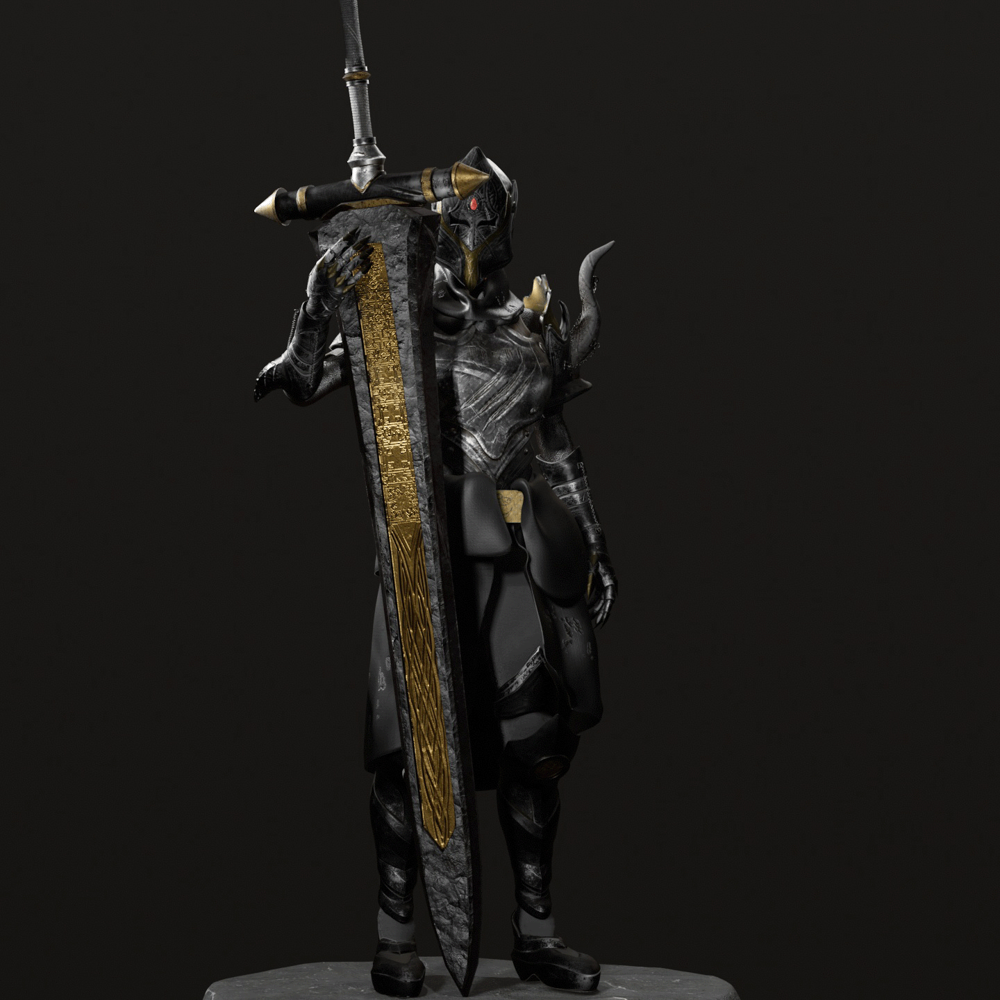
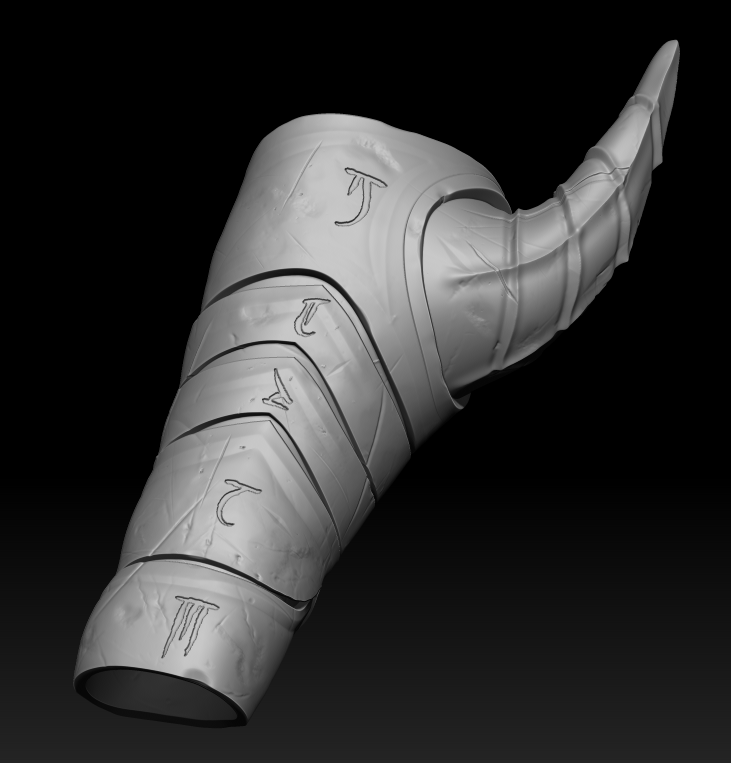
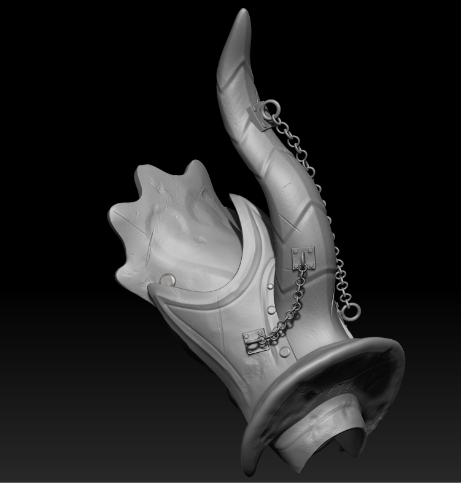
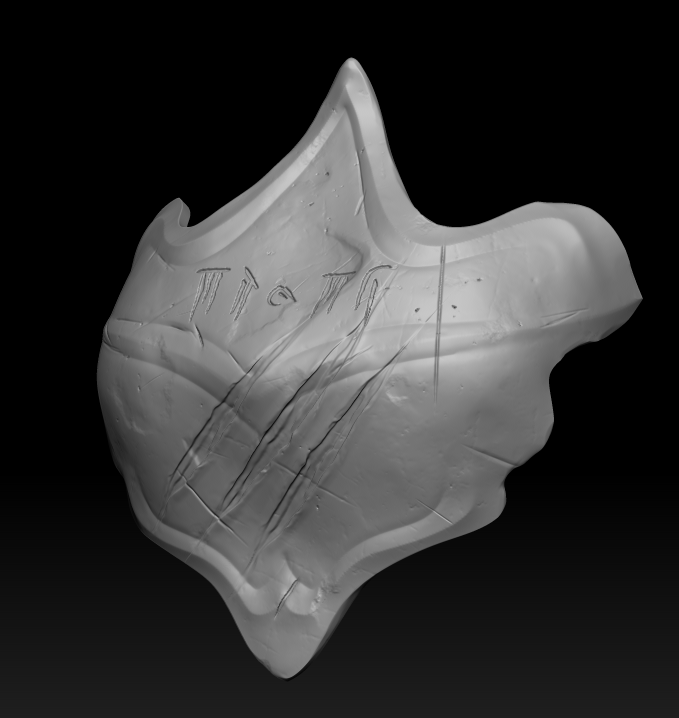
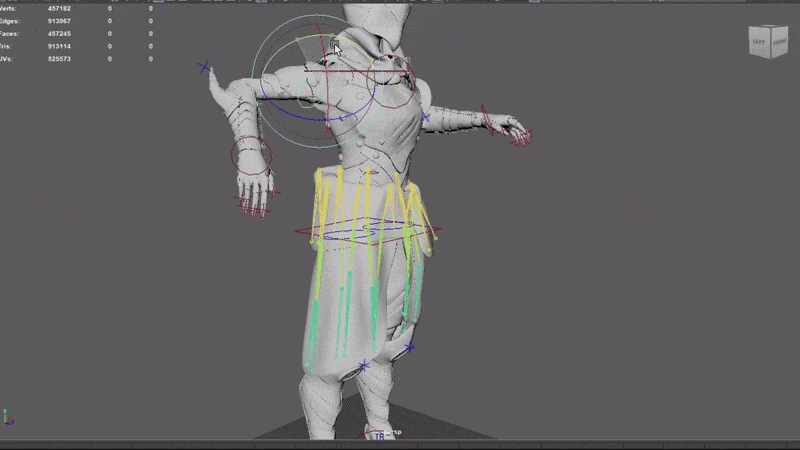
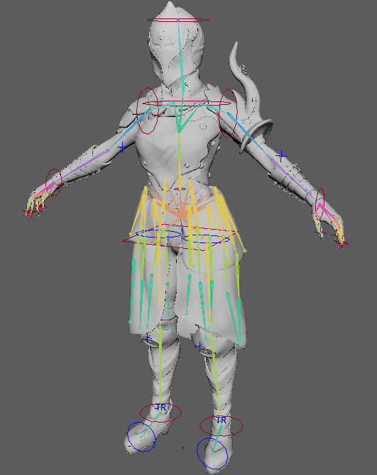

This character was my capstone project at Chatham University (2025),
where my goal was to master the workflows involved in creating an armored character
and implementing them into a real-time game engine — specifically Unreal Engine 5.
Throughout this project, I gained hands-on experience with hard surface sculpting
in ZBrush, rigging in Maya, rendering in Marmoset Toolbag 5, and animation retargeting
using Unreal Engine 5's built-in tools.
Hard-Surface Sculpting: The renders below showcase detailed ZBrush models of key
pieces from the armor set.



Rigging: This marked my first experience building a rig intended not just for posing, but for full in-engine playability. It was a valuable challenge that pushed me to think about character construction from a technical, game-ready perspective. I also experimented with adding bones to the waist cape, which ultimately led me to explore cloth simulation within Unreal Engine 5 — a skill I'm glad to have added to my toolkit.

